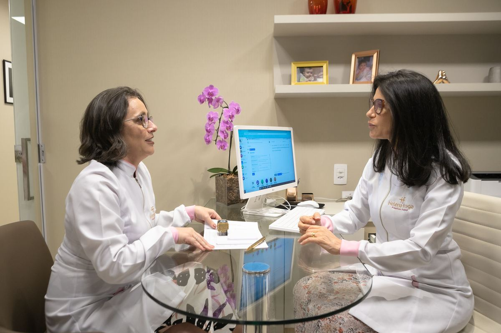

Ela transmite uma confiança muito grande, tem muita experiência e é muito comunicativa. Fiz uma blefaroplastia, estou muito satisfeita com o resultado da cirurgia e também pelo acompanhamento pós-cirúrgico.
Blefaroplastia · Belo Horizonte
O olhar que você reconhece, descansado.

Cirurgia das pálpebras conduzida por uma oftalmologista especialista em plástica ocular, com acompanhamento próximo do primeiro dia ao resultado final.
Solicitar avaliação Atendimento particular · SavassiPara quem é
Quando as pálpebras passam a falar por você.
Pálpebras pesadas dão ao rosto uma expressão de cansaço que não corresponde a como a pessoa se sente. A blefaroplastia corrige isso com precisão, preservando o que é seu.
- i.Excesso de pele nas pálpebras superiores
- ii.Bolsas de gordura sob os olhos
- iii.Aparência constante de cansaço ou sono
- iv.Sensação de peso ou redução do campo de visão
Foto genérica
paciente mulher
Para ela
paciente mulher
Aliviar o peso das pálpebras e as bolsas, mantendo a expressão que sempre foi sua.
Foto genérica
paciente homem
Para ele
paciente homem
Abrir o olhar preservando os traços masculinos, sem aspecto de quem operou.
Quem opera
Quem conhece o olho por dentro opera a pálpebra de outro modo: buscando um resultado bonito sem abrir mão da função.
Dra. Helena FragaCRM-MG 26838 · RQE 21631
- UFMG
- Medicina e residência em Oftalmologia
- Fellowship
- Retina e plástica ocular
- CBO
- Especialista em Oftalmologia
- SBCPO
- Especialista em cirurgia plástica ocular
- 20.000+cirurgias realizadas
- 30+anos de medicina
- 90dias de acompanhamento
- 4,9avaliação no Google
A cirurgia
Discreta do início ao fim.
Um procedimento breve, em hospital de olhos, planejado para que você volte para casa no mesmo dia.
- AvaliaçãoExame completo dos olhos e das pálpebras e um plano desenhado para o seu rosto.
- CirurgiaDe uma a duas horas, com anestesia local associada a sedação.
- Alta no mesmo diaVocê permanece no hospital por cerca de uma hora e volta para casa.
- AcompanhamentoNoventa dias de cuidado com toda a equipe, pelo Programa de Assistência Intensiva.
- DuraçãoUma a duas horas
- AnestesiaLocal com sedação
- InternaçãoNão é necessária
- RotinaSem exercício e maquiagem por 30 dias
Resultados
Antes e depois.
Arraste a linha para comparar. Cada caso traz a indicação e o tempo de recuperação.
Foto genérica
antes
antes
Foto genérica
depois
depois
Caso 1
mulher
mulher
Caso 2
homem
homem
Caso 3
mulher
mulher
Programa de Assistência Intensiva
O cuidado não termina na sala de cirurgia.
O PAI conduz a sua recuperação por noventa dias, presencialmente e à distância, com toda a equipe da clínica ao seu alcance.
- Primeiro diaCuidados intensificados, com tecnologias voltadas à recuperação imediata.
- Primeiras semanasReavaliações contínuas, drenagens linfáticas faciais, laser de baixa potência e fototerapia com LED.
- Todos os diasUm grupo exclusivo com toda a equipe, para qualquer dúvida.
- Noventa diasAcompanhamento até o resultado final, com fonoaudióloga e enfermeira esteta.
Depoimentos no Google
Quem passou por aqui.
4,9★★★★★nota média no Google
Dra. Helena é extremamente atenciosa e tem uma relação afetiva inigualável com seus pacientes, além de possuir uma infraestrutura incrível, um ambiente maravilhoso e claro, um acolhimento indispensável de toda a equipe.
Sinto-me segura com o acolhimento dado, os tratamentos feitos, as orientações fornecidas, tudo isso em um ambiente amistoso onde sou tratada com muito carinho por toda a equipe.
Dra. Helena é extremamente gentil, cuidadosa e muito eficiente. Estou muito feliz com o procedimento realizado e com o seu carinho.
Atendimento muito atencioso e claro, as orientações quanto à cirurgia e os resultados esperados. Valeu muito pelo carinho e atenção.
Dra. Helena e sua equipe são maravilhosas. Deu tudo certo na cirurgia, estou muito satisfeita com o resultado.
Mensagens de pacientes
O que chega depois da cirurgia.
Mensagens recebidas pela equipe durante o acompanhamento, publicadas com autorização.
Dra. Helena FragaAcompanhamento PAI
Texto genérico: mensagem do paciente no terceiro dia.
Texto genérico: resposta da equipe.
Texto genérico: mensagem do paciente após um mês.
Equipe
As pessoas que cuidam de você.
Do primeiro contato ao último retorno, você fala sempre com as mesmas pessoas.
Foto genérica
NomeEnfermeira estetaFoto genérica
NomeFonoaudiólogaFoto genérica
NomeAtendimentoA clínica
Na Savassi, com tempo e silêncio.
Um espaço pensado para consultas sem pressa, onde cada etapa acontece com privacidade.





Perguntas frequentes
O que costumam me perguntar na consulta.
A cirurgia dói?
Em geral, não. Costuma haver uma perda transitória de sensibilidade ao redor das incisões, e por isso a dor não é uma queixa habitual.
Vou ficar com inchaço e roxo?
Algum grau é esperado. As bandagens aplicadas logo após o procedimento e o Programa de Assistência Intensiva existem para reduzir esses sinais e encurtar a recuperação.
Quando retomo a rotina?
Atividade física e maquiagem ficam suspensas por trinta dias. As demais orientações são definidas para o seu caso, na consulta.
Meus olhos vão fechar normalmente?
Sim. A blefaroplastia é feita para melhorar a abertura dos olhos sem comprometer o fechamento adequado das pálpebras.
Preciso ficar internado?
Não. Você permanece no hospital de olhos, em média, por cerca de uma hora após o término da cirurgia.
Avaliação
Tudo começa por uma conversa sem pressa.
Na avaliação, examino seus olhos e pálpebras, ouço o que você espera e explico com clareza o que a cirurgia pode fazer por você.
Solicitar avaliação- Telefone
- (31) 3309-8710
- (31) 98446-1501
- @drahelenafraga